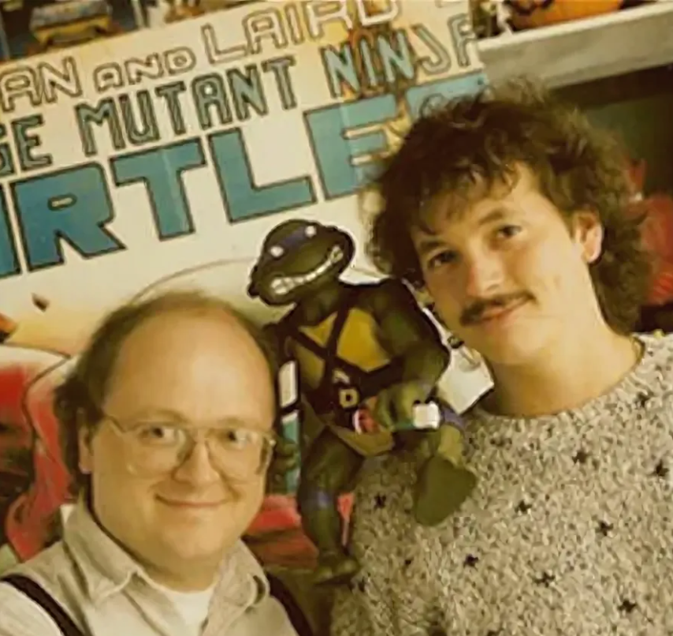

Kevin Eastman & Peter Laird
About the Creators of Teenage Mutant Ninja Turtles
Kevin Eastman and Peter Laird are American comic book artists and writers, best known as the co-creators of the Teenage Mutant Ninja Turtles (TMNT) in 1984. Their work not only sparked a cultural phenomenon but also redefined independent comic publishing, leading to cartoons, films, toys, and global recognition.
Major Events
- 1984 Created Teenage Mutant Ninja Turtles in Dover, New Hampshire.
- 1988 First TMNT animated series aired on television.
- 1990 Release of the first live-action TMNT movie.
- 2009 Nickelodeon acquired rights to TMNT.
- 2014 New TMNT film brought the heroes back to theaters.
Key Contributions
- Co-creators of Teenage Mutant Ninja Turtles
- Pioneers in independent comic publishing
- Shaped pop culture with iconic characters